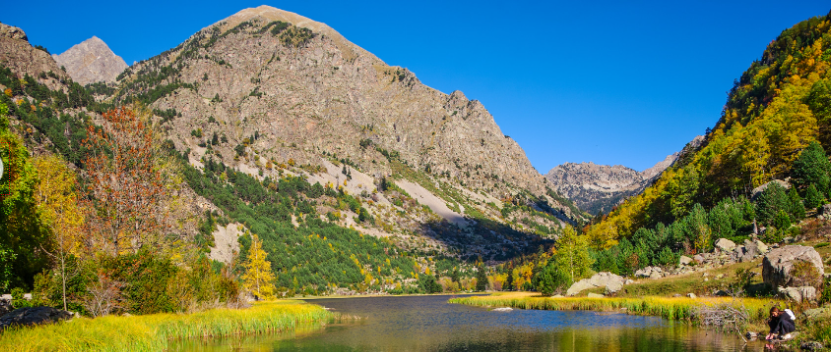
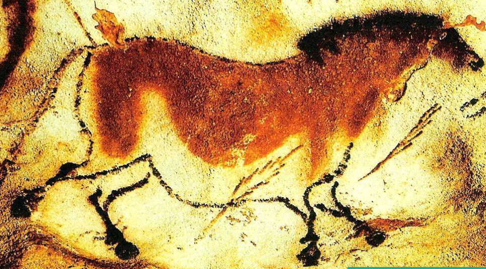

6 Maravillas autoctonas de Catalunya
Contenido web:
⇒Maravillas Naturales: Aunque países como Islandia, las Svalbard o Nueva Zelanda, son auténticos paraísos naturales y en ellos la naturaleza se ha hecho a sí misma dando lugar a ambientes de ensueño, Cataluña tiene un hábitat propio y su geografía tan variopinta ha dado lugar a zonas que merecen una oportunidad. Aquí se mencionan tres de esos lugares naturales turísticos.
⇒Maravillas Culturales: Desde su inicio junto al siglo IX hasta la actualidad, Cataluña ha sido la cuna del intercambio entre diferentes culturas, como la griega, la árabe o la cristiana. Aquí se mencionan tres lugares de interés cultural.
Maravillas Naturales: Maravillas Culturales:
 Una de las zonas húmedas más extensas y valiosas de Europa, cercana a la frontera con la Comunidad Valenciana, y moldeada por el río y el mar, el Delta del Ebro es uno de los lugares más importantes a nivel biológico de Catalunya
El Parque Nacional d’Aigüestortes i Estany de Sant Maurici es el único parque nacional de Catalunya, enclavado en el alto Pirineo de Lleida. Más de 40.000 hectáreas de cascadas, canchales, lagos, torrentes, turberas y frondosos bosques de pino negro, silvestre, abeto, abedul y haya bajo agrestes picos.
Estrategia militar y culto religioso se unen en el pico más alto de Cardona. Desde el siglo IX el castillo y la colegiata de Sant Vicenç dominan la comarca y controlan las salinas. Es durante la Guerra de Sucesión, cuando se convierten en un símbolo de la resistencia de los seguidores del archiduque Carlos ante los imperialistas de Felipe de Anjou
La Calle de Montcada hereda el nombre del Simo de Montcada quien murio defendiendo Occitania de los franceses cuando por orden del papa los cruzados erradicaron a los cataros, en ella se construlleron diferentes viviendas para la nobleza incluida hederos de la corona de Aragon en lo que es el actual museo picaso, antaño el palacio Aguilar
Girona cuenta con numerosos testimonios de su pasado medieval, una época de crecimiento en que se convirtió en la segunda ciudad de Cataluña con una población de 10.000 habitantes (siglo XV). El antiguo recinto amurallado romano se quedó pequeño y la ciudad se extendió hacia ambas orillas del río Onyar